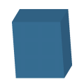
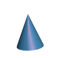
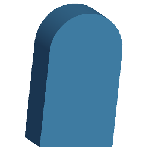
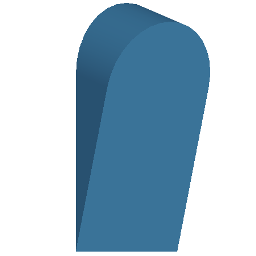
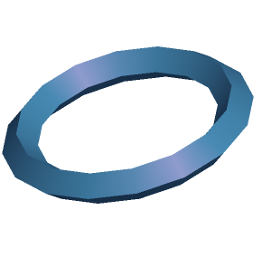
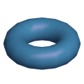
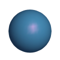

IN6 - TP sur les primitives surfaciques
1ere partie : Analyse d'une primitive 3D simple
Travailler dans le répertoire exoPrim3d.
- Compiler Exo.java et exécuter la classe
Exo.
- - Utiliser les touches "flèches" du clavier pour
analyser la scène. Expliquer dans le compte-rendu ce qui
apparaît à l'écran.
- - Corriger le défaut dans la classe ColorCube
(il provient des lignes mal indentées).
2eme partie : Approximations polyédriques
- - Compléter et tester la primitive cylindrique,
nommée ColorCylinder, basée sur le
même principe que la primitive ColorCube,
utilisant les primitives de tracé
GL_TRIANGLE_STRIP et GL_TRIANGLE_FAN.
Ce cylindre aura en attributs une hauteur, un rayon, et une
résolution (le nombre de facettes planes formant le
pourtour) dont on donnera une valeur par défaut de
sorte que le cylindre soit toujours bien cadré dans
la fenêtre, et que l'on puisse le tester correctement.
On choisira des couleurs distinctes pour chaque face.
Utiliser la touche r pour connaître les axes
du repère de référence (l'axe Z est
rouge).
- - Ajouter et tester une primitive comique, nommée
ColorCone avec pour seuls attributs une hauteur,
un rayon de base et une résolution, en utilisant
uniquement deux primitives GL_TRIANGLE_FAN.
Des valeurs par défaut seront fournies pour les
paramètres de sorte que le cône soit toujours
bien cadré dans la fenêtre, et que l'on puisse
le tester correctement.
On choisira des couleurs distinctes pour chaque face.
3eme partie : Primitives volumiques lissées
Travailler dans le répertoire exoSolid.
- Compiler Exo.java puis exécuter Exo
avec 1 en argument.
- Par rapport à la primitive ColorCube où
une couleur est spécifiée pour chaque facette
plane, dans la primitive Box, sont
spécifiés une normale en chaque sommet, un
matériau pour chaque objet et des sources de
lumière pour la scène.
- - Ajouter et tester une primitive conique, nommée
Cone, similaire à ColorCone, mais dans
laquelle la spécification de couleurs est
remplacée par une spécification de normales en
chaque sommet.
Mettre 2 en argument pour tester.
- - Ajouter et tester une primitive Milestone, de forme
similaire à une borne kilométrique : une
boîte surmontée d'un demi-cylindre dont le
diamètre correspond à la largeur de la
boîte (cf dessin).
Respecter les paramètres fournis.
Utiliser le moins possible de bloc begin - end.
Mettre 3 en argument pour tester.
- - Ajouter et tester une primitive Wedge, de forme
similaire à une borne kilométrique coupée
en deux selon un plan diagonal tel que la partie arrondie
soit épaisse et la base d'épaisseur nulle.
L'épaisseur (depth) varie en fonction de
la hauteur. L'une des faces planes sera parallèle
au plan 0XZ.
Respecter les paramètres fournis.
Utiliser le moins possible de bloc begin - end.
Mettre 4 en argument pour tester.
- 






- - Ajouter et tester une primitive DiamondTorus, un
tore à section en forme de carré tourné
de 45 degrés.
Mettre 5 en argument pour tester.
- - Ajouter et tester une primitive CircTorus, un
tore à section circulaire (un anneau).
Pour cette primitive, on a un paramètre de
résolution pour la rotation autour du centre du tore,
et un autre paramètre de résolution pour la
rotation autour de la section du tore.
Mettre 6 en argument pour tester.
4eme partie : Maillages
- - Ajouter et tester une primitive sphérique, nommée
Sphere basée sur des coordonnées
sphériques (longitude et platitude), avec pour
attributs un rayon une résolution en latitude (nombre
de parallèles) et une résolution en longitude
(nombre de méridiens).
Mettre 7 en argument pour tester.
- - Ajouter et tester une primitive sphérique,
nommée Dome, basée sur la subdivision
récursive d'un icosaèdre (polyèdre
régulier à 20 faces et 12 sommets), avec en
attributs un rayon et une résolution (nombre de
subdivisions effectuées).
On pourra s'inspirer de la primitive
ColorIcosahedron.java disponible dans le
répertoire exoPrim3D.
Une version simple s'appuie sur la primitive
GL_TRIANGLES.
Une version optimisée s'appuie sur une suite de
GL_TRIANGLE_STRIP.
Mettre 8 en argument pour tester.